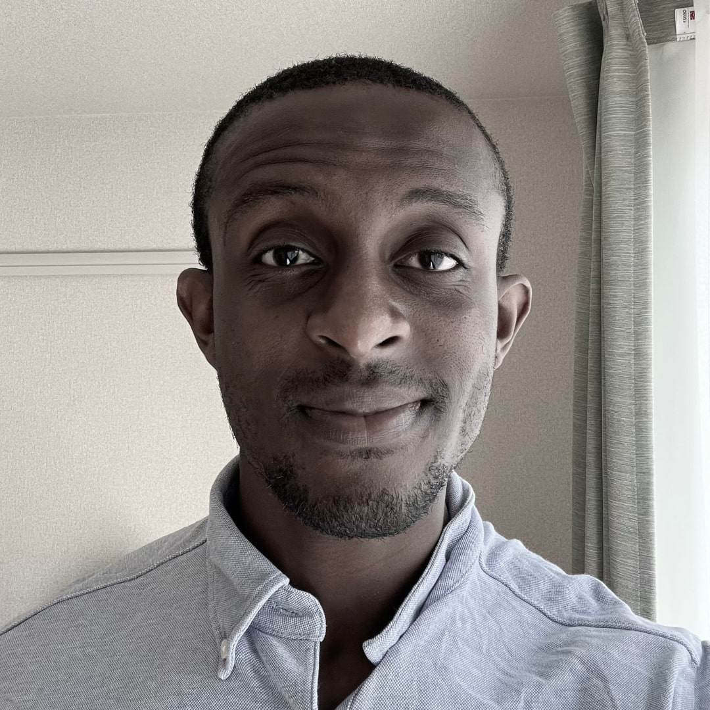

Social Media Content Creator & Blockchain Developer

Hello friends!
My name is Benjamin and I am a social media content creator & a blockchain developer.
Here are a few fun facts about me:
-
Graduated from SWAU with a B.S. in Biological Sciences in 2018.
-
In 2019, I changed the trajectory of my life after discovering cryptocurrency
and blockchain technology.
-
I've built cryptocurrency, blockchain & travel related social media
accounts that gained a cumulative total of over 50k followers.
These channels are now defunct, but you can still check them out here
-
Completed the Emerald Academy Beginners In Cadence Bootcamp.
Now, I'm focused on improving my skills in blockchain development and
web development. Keep up with my projects here.
-
My longterm goal is to be a blockchain developer working in the gaming or
medical industries.